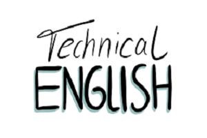
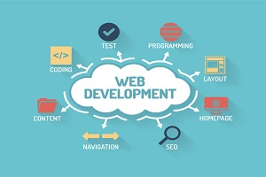

LEVEL1_MAT8001C_030 - Technical Mathematics for Computer Science
The study of algebraic and transcendental functions is an essential
prerequisite to Calculus.
LEVEL1_CST8300 - Achieving Success in Changing Environments
Students apply critical thinking and decision-making tools to help
resolve some of the important issues in our complex society with its
competing interests.
LEVEL1_CST8215 - Introduction to Database
Students learn the fundamentals of Relational Databases design using
Entity Relation diagrams, and use SQL to create, modify and query a
database.
LEVEL1_CST8116 - Introduction to Computer Programming
Possessing the fundamentals of logic, problem-solving and
programming language structure provides a solid foundation for
further study in the field.
LEVEL1_CST8101 - Computer Essentials
The essentials of computer software, hardware, and laptop management
form the foundation for building further technical programming
skill.

LEVEL2_ENL2019T - Technical Communication for Engineering
Technologies
The ability to communicate effectively in a technically-oriented
interdisciplinary workplace is a foundational skill in an
innovation-driven economy.

LEVEL2_CST8285 - Web Programming
Students develop basic skills of web programming, website design and
implementation.
Students explore object-oriented programming methodology using the
Java programming language.
LEVEL2_CST8102 - Operating System Fundamentals (GNU/Linux)
Students explore the basic concepts and components of Operating
Systems (OS), and how they function and interact with hardware and
software components.
LEVEL2_CST2355 - Database Systems
Students acquire practical experience using market-leading
object-relational database management systems like Oracle and MySQL.
LEVEL2_GEP1001 - Cooperative Education Readiness
Through a detailed orientation students learn the cooperative
education program policies and procedures related to searching and
securing a work term opportunity.